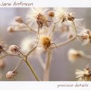

| Artist: | Jane Anfinson |
| Title: | Precious Details |
| Label: | self produced |
| Length(s): | 55 minutes |
| Year(s) of release: | 2005 |
| Month of review: | [12/2005] |
| 1) | Vital Statistics | 5.57 |
| 2) | Back Of My Hand | 5.09 |
| 3) | Heaven Or The End | 4.31 |
| 4) | Night Flight | 5.28 |
| 5) | Muses | 4.42 |
| 6) | Violet | 5.13 |
| 7) | Noticing Change | 4.07 |
| 8) | Patience | 3.17 |
| 9) | Child's Play | 3.33 |
| 10) | In Anticipation | 4.23 |
| 11) | Bored | 5.11 |
| 12) | Mars | 4.24 |
Back Of My Hand opens with chamber orchestra like material, a bit stately and minimalistic. The minimalism soon disappears, and we come to a rather light tune, a bit dancing. Anfinson has a tendency to add story telling lyrics to a rather dark violin sound. The melodies tend to have something of the Balkan (Eastern Europe). Much of her vocals are treated and that works well in combination.
With Heaven Or The End we move into percussive world music style. I am reminded of Peter Gabriel at this point, or maybe a bit of Laurie Anderson. Anfinson switches between vocoded and somewhat higher non-vocoded vocals. I am not that fond of the latter, but like I said earlier the vocoded ones work well. The chorus on this song is good and catches the ear. Sometimes I get the impression that they storytelling contradicts the need for fluently flowing lyrics.
Night Flight combines the more ethereal vocals of Anfinson with her more down to earth ones, alternated throughout the song. The violin work reminds of Stuart Gordon (with Peter Hammill). Muses is different, a bit darker and more slow moving, but the violin, is it the violin?, is also played in plucking style. The vocals are intimately sung. Again, the feel of the music approaches that on Hammill's softer songs with Stuart Gordon.
Violet is a menacing tune. The vocals do give the impression at this point that we have heard it before. This has to do with the way that Anfinson colours her vocals and chooses her vocal melodies. The atmosphere she builds here is good, and do I here some keyboards or piano there? One of the better songs.
The opening section on Noticing Change is very much in a melodic chamber orchestra style. The music has a more majestic character at this point. The percussionist also add some interesting details to the song to obtain this somewhat classical and filmic feel. A nice change.
On Patience the vocals come back, in a rather threatening fashion in fact. The non-vocoded vocals are quite different. There is a certain lightness and tongue-in-cheekness about them. All in all again a nice song, and easily remembered too. Child's Play is slow and plodding, while In Anticipation is hampered by the percussionist hammering away. The Middle Eastern feel is nice, but the vocal parts are a bit too simple and tuneful.
Bored is not too interesting, a bit uneventful, that is until the electric violin comes screaming in. Maybe Anfinson should try this more often for variation. Not much though since it typically meanders around in somewhat arbitrary fashion. The vocals can be very alt-like (as in 'alternative music') and she even gets rowdy towards the end. Mars closes down the album in a rather slow and dreary fashion.